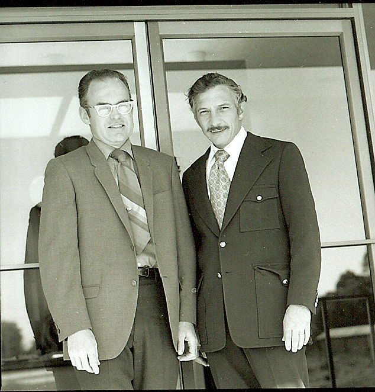
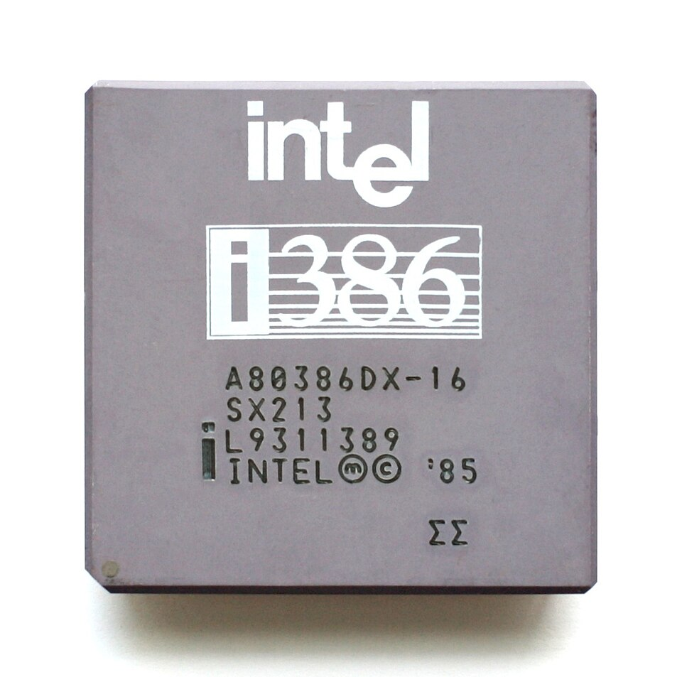
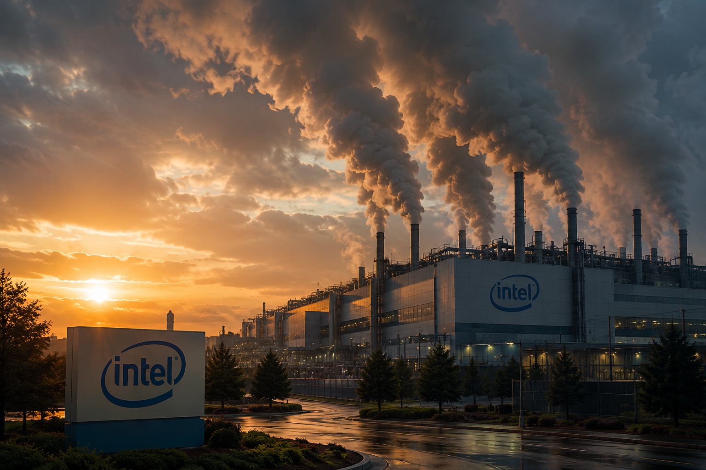
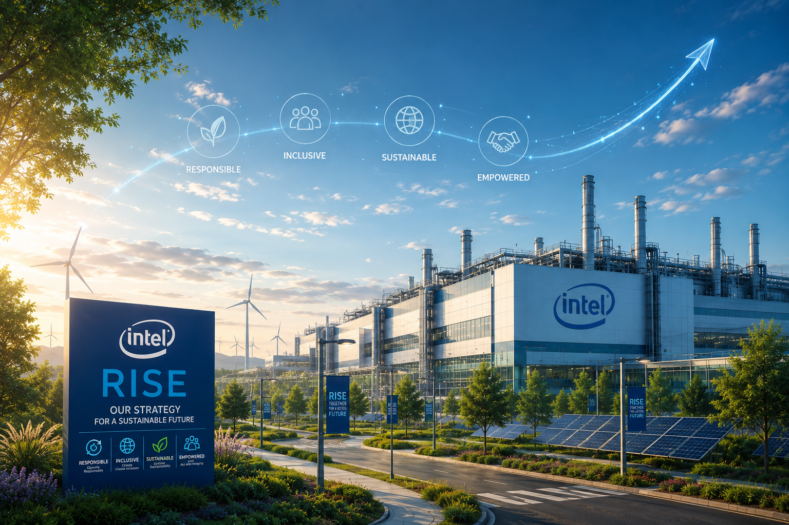
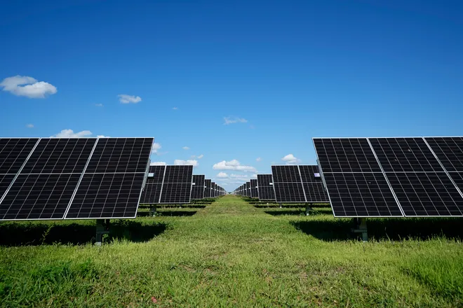
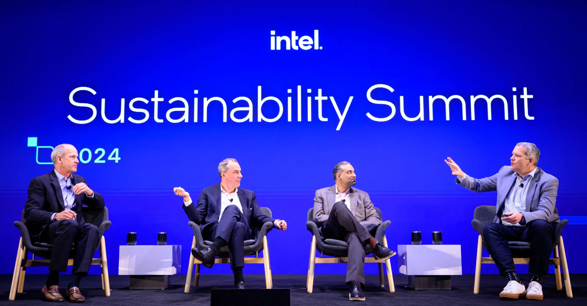

1968
Intel Founded
Robert Noyce and Gordon Moore rename NM Electronics to Intel Corporation.
Explore Intel's journey through time, discovering how our commitment to innovation has shaped a more sustainable future for technology and our planet.
Intel Sustainability Milestones

1968
Robert Noyce and Gordon Moore rename NM Electronics to Intel Corporation.

1971
The 4004 becomes the world's first commercial microprocessor.

1978
Intel launches the 8086, defining the x86 architecture that powers modern computing.

1985
Intel introduces the 386 for a new era of 32-bit computing performance.

2006
Intel reaches its highest annual greenhouse gas emissions for operations.

2020
Intel launches the RISE strategy and 2030 sustainability goals.

2022
Intel commits to net-zero greenhouse gas emissions for global operations.

2023
Intel achieves 99% renewable electricity usage worldwide.

2024
Intel hosts its first Sustainability Summit for suppliers and industry leaders.
Scroll horizontally on wide screens | Hover or focus cards to reveal more details.
Under its RISE (Responsible, Inclusive, Sustainable, Enabling) strategy, Intel sets ambitious 2030 goals, including driving industry-wide progress on climate action, water stewardship, and waste reduction.
Learn MoreIn 2022, Intel pledged to achieve net-zero greenhouse gas emissions (Scope 1 and 2) by 2040. This commitment builds on decades of environmental initiatives and partnerships across the semiconductor industry.
Learn MoreIntel conserves billions of gallons of water annually and collaborates with local communities to restore watersheds. Intel also upcycles and recycles materials to reduce waste and advance a circular economy.
Learn More